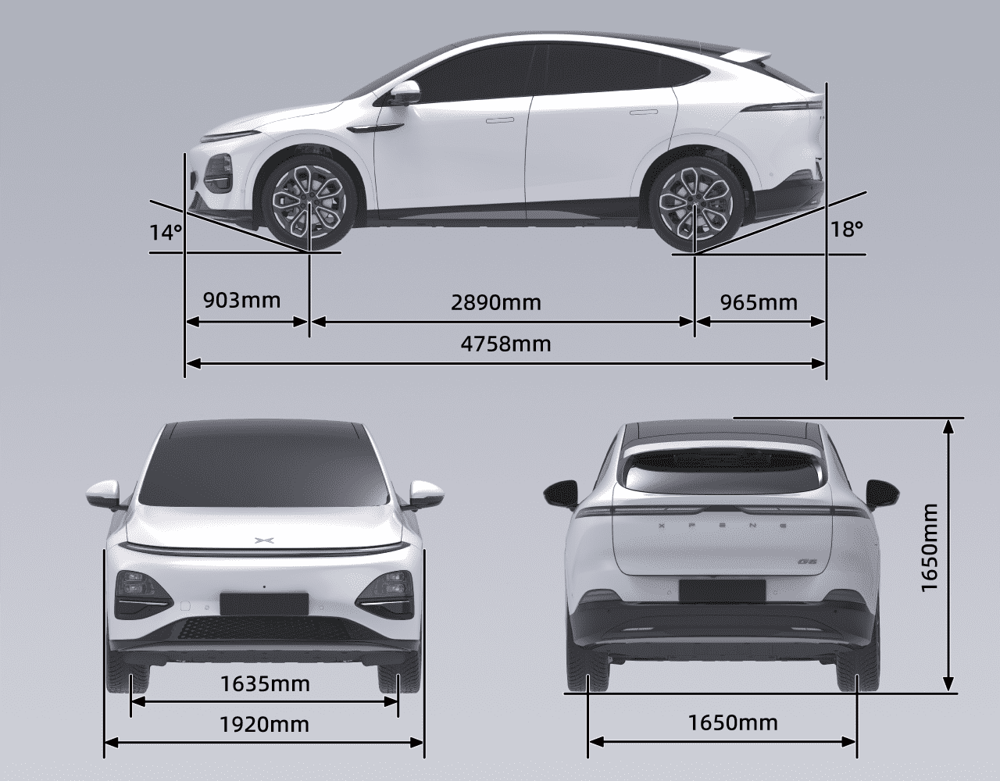
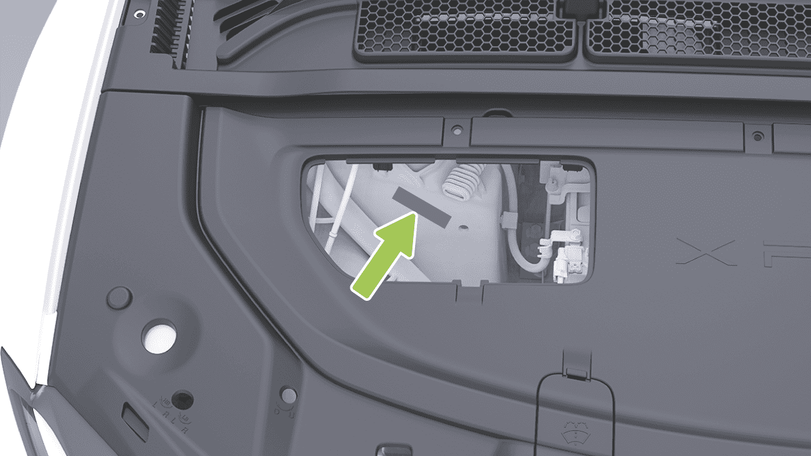
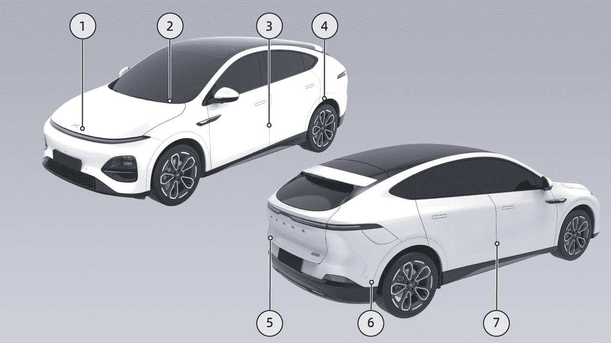
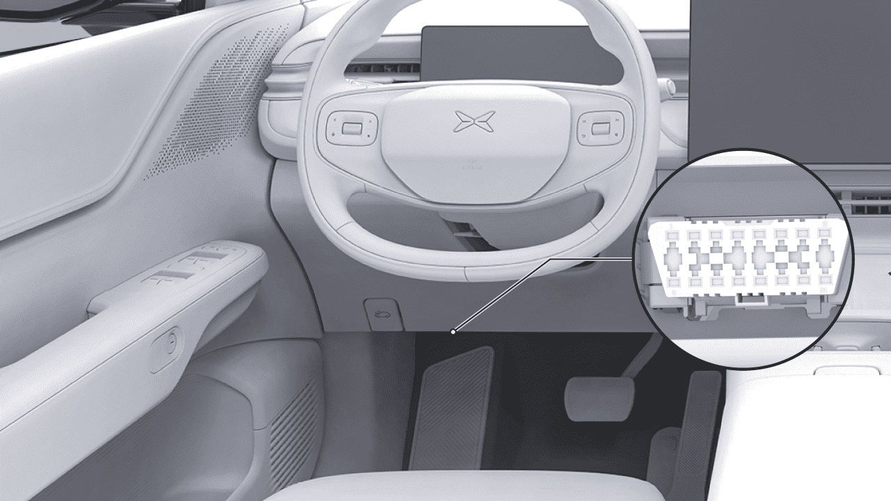
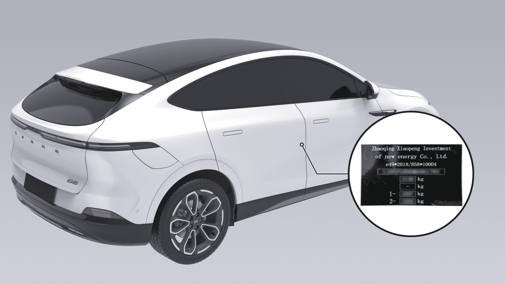
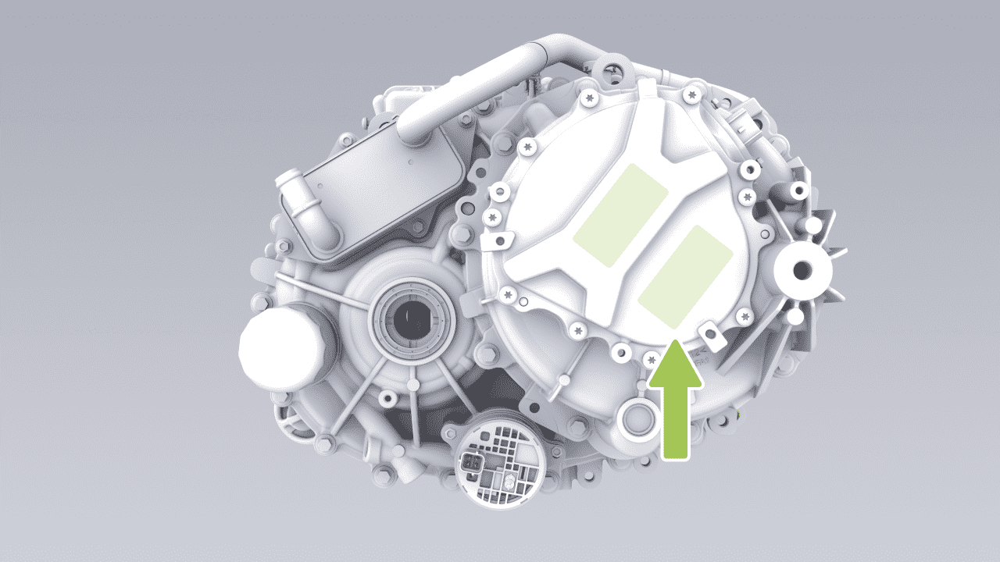
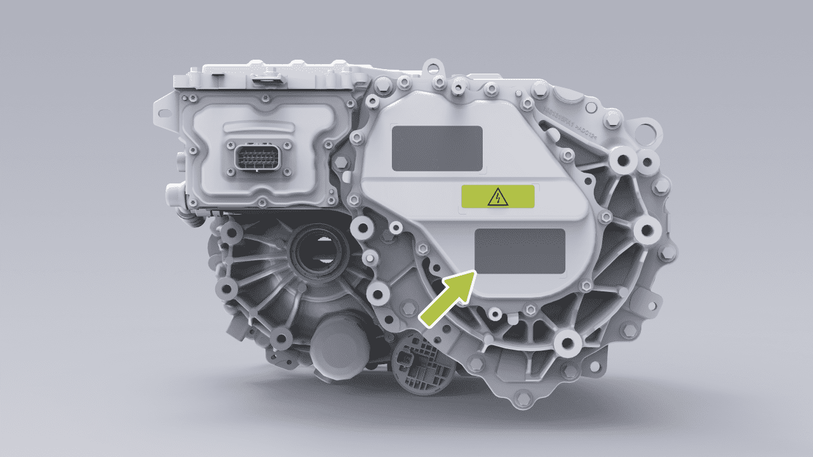
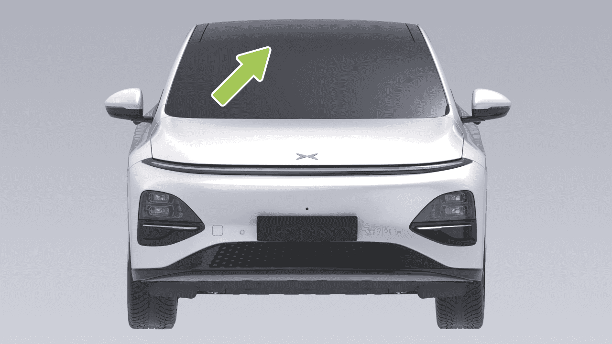

Información del Vehículo
Información del Vehículo
Parámetros del Vehículo
Dimensiones

Información del Vehículo
Longitud (mm) 4758
Dimensión
Ancho (mm) 1920
Altura (mm) 1650
Distancia entre ruedas delanteras (mm) 1635
Distancia entre ejes
Distancia entre ruedas traseras (mm) 1650
Batalla (mm) 2890
Suspensión delantera (mm)
Suspensión trasera (mm)
Número de ocupantes
Ángulo de aproximación (carga completa) (°)
Ángulo de salida (carga completa) (°)
Información del Vehículo
Consejos
Los espejos retrovisores exteriores (uno en cada lado) no se incluyen en el ancho exterior. La tolerancia de los parámetros dimensionales del vehículo es ±1%. Peso
Nombre del artículo 2WD largo alcance 2WD alcance ultra largo
4WD alcance ultra largo
Peso en vacío del vehículo (kg) 2065, 2085 (gancho de remolque)
2115, 2140 (gancho de remolque)
2220, 2240 (gancho de remolque)
Eje delantero (kg) 979, 969 (gancho de remolque)
984, 978 (gancho de remolque)
1088, 1080 (gancho de remolque)
En vacío
Eje trasero (kg) 1086, 1116 (gancho de remolque)
1131, 1162 (gancho de remolque)
1132, 1160 (gancho de remolque)
Masa bruta del vehículo (kg) 2535 2590 2690
Máximo
Eje delantero (kg) 1090 1098 1200
Eje trasero (kg) 1445 1492 1490
Información del Vehículo
Consejos
El rango de tolerancia del parámetro de masa es ±3%, excepto para la masa total máxima.
Información del Vehículo
Parámetros de Rendimiento
Diámetro mínimo de giro (m) 11.6
Velocidad máxima (km/h)
Pendiente máxima (%)
Información del Vehículo
Ruedas y Neumáticos
Neumáticos 235/60R18 255/45R20
Llanta 18×7.5J 20×8.5J
Ruedas delanteras (sin carga/ media carga/carga completa) (kPa)
Presión
Ruedas traseras (sin carga/ media carga/carga completa) (kPa)
Ruedas delanteras, lado interior (g) ≤8
Ruedas delanteras, lado exterior (g) ≤8
Equilibrado de ruedas (después de montar los contrapesos)
Ruedas traseras, lado interior (g) ≤8
Ruedas traseras, lado exterior (g) ≤8
Información del Vehículo
Frenos y Suspensión
Tipo Tipo de disco de ventilación con pinza flotante
Tipo de asistencia Dirección asistida eléctrica
Límite de desgaste de la pastilla de freno de la rueda delantera (sin incluir la placa de soporte) (mm)
Recorrido libre o recorrido sin carga del pedal de freno (mm) ≤2
Límite de desgaste de la pastilla de freno de la rueda trasera (sin incluir la placa de soporte) (mm) 3.3
Límite de desgaste del disco de freno delantero (mm)
Límite de desgaste del disco de freno trasero (mm)
Tipo de suspensión delantera Suspensión independiente de doble brazo
Tipo de suspensión trasera Suspensión independiente de múltiples brazos
Información del Vehículo
Especificaciones de alineación de cuatro ruedas
Convergencia de rueda delantera individual 0.15°±0.05°
Ángulo de pivote individual 6.8°±1°
Ángulo de inclinación de rueda delantera individual -0.5°±0.5°
Ángulo de inclinación del pivote individual 10.2°±1°
Convergencia de rueda trasera individual 0.1°±0.05°
Ángulo de inclinación de rueda trasera -1.36°±0.5°
Información del Vehículo
Parámetros del Sistema de Propulsión Eléctrica
Configuración de propulsión Largo alcance 2WD
Alcance ultra largo 2WD Alcance ultra largo 4WD
Nombre del artículo Sistema de propulsión eléctrica trasero
Sistema de propulsión eléctrica trasero
Sistema de propulsión eléctrica delantero
Sistema de propulsión eléctrica trasero
Información del Vehículo
Síncrono de imán permanente
Síncrono de imán permanente
Asíncrono de CA
Síncrono de imán permanente
Tipo
Potencia nominal (kW) 110*/218/185 218/185
Par nominal (N·m)
Motor eléctrico
Velocidad nominal (rpm) 6190 6190 7300 6190
Potencia máxima (kW)
Par máximo (N·m)
Velocidad máxima (rpm) 18000 18000 18000 18000
Modelo 1ETP45A 1ETP45A 1ETP22A 1ETP45A
Reductor
Número de engranajes
Información del vehículo
Parámetros de ajuste del asiento
En la posición inicial, los parámetros de ajuste del asiento son los siguientes:
Tipo de asiento Artículo Parámetro
Ajuste adelante y atrás
Recorrido total: 260 mm; 212 mm adelante, 48 mm atrás
Asiento del conductor
Ajuste del respaldo Recorrido total 91°, 16° adelante y 75° atrás
Ajuste arriba/abajo
Recorrido total 69,5 mm, 35,6 mm hacia arriba y 33,9 mm hacia abajo
Ajuste del cojín El recorrido total es 6°, con 5° hacia arriba y 1° hacia abajo
Información del vehículo
Ajuste adelante y atrás
Recorrido total: 260 mm; 212 mm adelante, 48 mm atrás
Asiento del pasajero delantero
Ajuste del respaldo Recorrido total 91°, 16° adelante y 75° atrás
Ajuste arriba/abajo
Recorrido total 69,5 mm, 35,6 mm hacia arriba y 33,9 mm hacia abajo
Información del vehículo
Fluidos y capacidad
Introducción
Nombre del artículo Modelo Cantidad de llenado
Aceite lubricante del accionamiento eléctrico delantero* (L)
FUCHS 4101
1,35 L
Aceite lubricante del accionamiento eléctrico trasero (L) 1,4 L
Refrigerante (L) Mezcla de glicol y agua
Modelo 2WD Aprox. 14,8 L
Modelo 4WD Aprox. 15,2 L
Refrigerante del aire acondicionado (g)
R1234yf* 1150±15
Líquido de frenos (L) DOT4 1,04 L
R134a* 1250±15
Líquido limpiaparabrisas (L) /
Información del vehículo
Placa de identificación y etiquetas
Número de identificación del vehículo (VIN)
1. Colocada en el lado interior del capó.
- Colocada en la esquina inferior izquierda del parabrisas delantero.
El código de identificación del vehículo está grabado en la torre derecha del asiento de la cabina delantera del molde de aluminio.
-
Colocada en el pilar B izquierdo.
-
Colocada en la casa de ruedas trasera izquierda.
-
Colocada en el lado izquierdo de la tapa del maletero.
Otros VIN se encuentran en las siguientes posiciones del vehículo:
-
Colocada en el miembro transversal frontal del piso trasero.
-
Colocada en el panel interno de la puerta trasera derecha.


Información del vehículo
Puerto de diagnóstico OBD
Placa de identificación del producto del vehículo
El puerto OBD para leer el VIN electrónico se encuentra en la parte inferior derecha del panel de instrumentos. El VIN electrónico, la información de estado del vehículo y otros datos se pueden leer con el aparato de diagnóstico del fabricante original o con equipo de diagnóstico aprobado oficialmente por el fabricante original.
La placa de identificación del producto se encuentra en el pilar B del lado del pasajero y se puede ver después de abrir la puerta del lado del pasajero.


Información del vehículo
Modelo y número del motor eléctrico
Motor de tracción trasera
Motor eléctrico delantero*
El modelo y número de serie del motor de tracción se muestran en la carcasa del motor de tracción y en la etiqueta del motor de tracción.
El modelo y número de serie del motor de tracción se muestran en la carcasa del motor de tracción y en la etiqueta del motor de tracción.
Piezas y Modificaciones
Introducción
Solo se pueden usar piezas originales XPENG genuinas o aprobadas. XPENG ha realizado pruebas rigurosas en las piezas para garantizar su idoneidad, seguridad y confiabilidad. Estas piezas solo pueden ser


Vehicle Information
compradas en el Centro de Servicio XPENG, instaladas por profesionales de XPENG, y los vehículos pueden ser modificados según las recomendaciones de expertos de XPENG.
Está prohibido reemplazar, modificar o agregar radares o cámaras sin permiso. De lo contrario, puede afectar el funcionamiento normal de funciones relacionadas como la asistencia del conductor y también puede causar interferencia de radio. XPENG no asume ninguna responsabilidad por ninguna pérdida directa o indirecta causada como resultado. En caso de cualquier falla de radar o cámara, visite el Centro de Servicio XPENG para reparaciones.
No modifique el vehículo utilizando piezas no originales de XPENG o no aprobadas, ya que esto puede afectar la operabilidad, seguridad y durabilidad del vehículo, y también puede violar las regulaciones del gobierno local.
No modifique los sistemas de suspensión o frenos del vehículo, ya que esto puede afectar adversamente el manejo y la seguridad del vehículo.
Al modificar la carrocería del vehículo (como aplicar película cambiante de color, película transparente de protección de pintura o franjas anti-colisión), evite áreas con radar ultrasónico, SRR, cámaras AVM y cámaras de alta percepción, ya que esto puede afectar el funcionamiento normal de funciones relacionadas como la asistencia del conductor.
Está prohibido modificar la caja de fusibles del vehículo, de lo contrario puede afectar adversamente el sistema eléctrico del vehículo.
El SRR se encuentra ubicado dentro de los parachoques delantero y trasero. Está prohibido pintar, agregar molduras u otras modificaciones a los parachoques delantero y trasero sin permiso, ya que esto puede afectar el funcionamiento normal de funciones relacionadas como la asistencia del conductor.
Las modificaciones de componentes electrónicos, software o cableado pueden afectar la funcionalidad y el funcionamiento normal de componentes relacionados, particularmente sistemas relacionados con la seguridad, impactando así la operación del vehículo e incrementando el riesgo de accidentes o lesiones.
Vehicle Information
Por lo tanto, no modifique el cableado, los componentes electrónicos o su software.
Ventanas Ondas de radio
Además, el daño al vehículo o problemas de rendimiento causados por el uso de piezas no originales de XPENG o no aprobadas para reemplazo, instalación o modificación no están cubiertos por la garantía. XPENG no asume ninguna responsabilidad por ninguna pérdida directa o indirecta causada como resultado.
Introducción
Requisitos de Reciclaje y Procedimientos de la Batería de Tracción
Introducción
Cuando la batería de tracción necesite ser reemplazada o desechada, asegúrese de contactar al Centro de Servicio XPENG para reciclaje y manejo. El desecho inadecuado de la batería de tracción puede causar contaminación ambiental o peligros de seguridad, y el propietario del vehículo asumirá la responsabilidad correspondiente.
La ventana de ondas de radio está ubicada en el parabrisas.
advertencia
• Bloqueo de la posición de la ventana de ondas de radio.
• Seleccione la ubicación alrededor de la ventana de ondas de radio al colocar las marcas necesarias para las regulaciones de tráfico.
